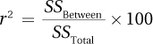
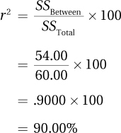
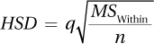
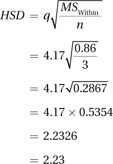
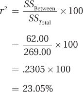
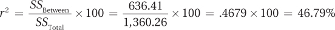
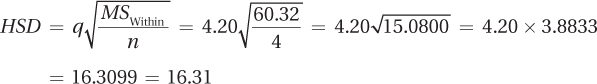

The interpretation of a between-subjects, one-way ANOVA starts the same way it did for t tests, addressing questions of whether the null hypothesis was rejected and how big the effect is. After that, the interpretation answers a different question, where the effect is found.
Why is there a need to worry about where the effect is? This question didn’t have to be addressed for a t test because in a t test just two groups exist. If the results of a t test were statistically significant, it was clear that the mean of Group 1 was different from the mean of Group 2. However, there can be more than two groups in an ANOVA. If the results of the ANOVA are statistically significant, then all that is known is that the mean of at least one group is different from at least one other group. If there are three groups, the mean of Group 1 could differ from the mean of Group 2, the mean of Group 1 could differ from the mean of Group 3, or the mean of Group 2 could differ from the mean of Group 3. It is also possible that two of the mean of the three pairs could differ or that all three pairs could differ. This is why it’s important to address the question of where the effect is when interpreting a statistically significant ANOVA.
356
Dr. Chung’s maze study compared rats that expected to find different foods in the goal box of a maze. Ten rats were assigned to three groups—one that expected to find low-calorie food in the goal box, one that expected medium-calorie food, and one that expected high-calorie food. The rats expecting low-calorie food took 31 seconds from start box to goal box, the rats expecting medium-calorie food took 28 seconds, and the rats expecting high-calorie food took 25 seconds. Dr. Chung had determined Fcv = 4.737 and formulated the decision rule:
If F ≥ 4.737, reject the null hypothesis.
If F < 4.737, fail to reject the null hypothesis.
As shown in the ANOVA summary table, Table 10.8, F = 31.40 for the maze data. Applying the decision rule, it is clear that 31.40 is greater than or equal to 4.737, and Figure 10.12 shows how the observed value of F falls in the rare zone. This means that the null hypothesis is rejected and the alternative hypothesis accepted. This leads to the conclusion that at least one of the three groups—rats expecting low-calorie food, rats expecting medium-calorie food, or rats expecting high-calorie food—differs from at least one of the others in terms of the mean time it takes to get to the food. It is not yet clear where the difference lies, so the best interpretation Dr. Chung can make at present is: “The results of the between-subjects, one-way ANOVA were statistically significant [F(2, 7) = 31.40, p < .05], indicating that there is a statistically significant difference in the time it takes to get from the start box to the goal box depending on the calorie content of the food a rat expects to find.”
357
Dr. Chung used APA format in reporting the results of the analysis of variance. APA format provides five pieces of information:
F indicates that an F test, an analysis of variance, was used.
The numbers in parentheses, 2 and 7, are the degrees of freedom for SSBetween, the numerator of the F ratio, and for SSWithin, the denominator of the F ratio. By adding these two numbers together and adding 1, it is possible to find the sample size:
N = 2 + 7 + 1 = 10
31.40 is the observed (calculated) value of the test statistic.
.05 reveals that alpha was set at .05 and there is a 5% chance of making a Type I error.
p < .05 indicates that the null hypothesis was rejected. It means that an F value of 31.40 is a rare occurrence (it happens less than 5% of the time) when the null hypothesis is true.
The second question to be addressed in interpreting an ANOVA is how big the overall effect is. That is, how much impact does the independent variable have on the dependent variable? For the maze data, this involves asking how much impact the three different types of food (low-, medium-, and high-calorie) have on the time it takes to run the maze.
Once again, r2 will be used. Equation 10.8 shows how to calculate r2, the percentage of variability in the outcome variable that is accounted for by group status.

where r2 = the percentage of variability in the dependent variable that is accounted for by the explanatory variable
SSBetween = between-groups sum of squares (Equation 10.3)
SSTotal = total sum of squares (Equation 10.2)
This formula says that r2 is calculated as the between-groups sum of squares divided by the total sum of squares. Then, to turn it into a percentage, the ratio is multiplied by 100. These calculations reveal the percentage of total variability in the scores that is accounted for by the treatment effect. For the maze data, these calculations would lead to the conclusion that r2 = 90%:

358
By Cohen’s standards, an r2 of 90% is a huge effect. Figure 10.13 is a visual demonstration of how big an effect this is. Here is what Dr. Chung’s interpretation would look like for the maze data now that r2 is known:
The results of the one-way ANOVA were statistically significant [F(2, 7) = 31.40, p < .05], indicating that the time it takes a hungry rat to run a maze is affected by the type of food it expects to find in the goal box. When all the rats are of the same age and from the same strain, as they were here, then the calorie content of the food in the goal box has a very large effect on the speed with which the animal travels the maze. In fact, the type of food in the goal box explains 90% of the variability in running speed.
Here’s a heads up for future chapters and for reading results sections in psychology articles—there’s another measure of effect size for a between-subjects, one-way ANOVA that is calculated exactly the same way as r2, but is called something different. It is called “eta squared” and abbreviated η2. It is calculated the same way as r2 and provides the same information, how much of the variability in the dependent variable is explained by the independent variable.
Q How is η pronounced?
A η is the lowercase version of the Greek letter eta and there is no consensus on how it should be pronounced. I have heard “eat-uh,” “etta,” and “ey-tuh” as in “hey.” Whichever one you choose, just say it with confidence and you’ll be fine.
So far, Dr. Chung knows that the goal affects running time and how much variability is explained, but he doesn’t know where the effect occurs. Is the 3-second difference between the mean of low-calorie time and the mean of medium-calorie time a statistically significant one? Or, does it take the 6-second difference between low-calorie and high-calorie goals to be statistically significant?
359
Post-hoc tests are meant to be used only after a statistically significant F ratio has been found.
The F ratio, which was statistically significant, reveals that at least one pair of means has a statistically significant difference, but it doesn’t tell which one or which ones. For that, a post-hoc test is needed. “Post-hoc” is Latin for “after this” and post-hoc tests are meant to be used only after a statistically significant F ratio has been found. Post-hoc tests are mathematically designed to allow multiple comparisons to be made while keeping alpha at the desired level.
There are a wide variety of post-hoc tests with cool names like the Scheffé, the Newman-Keuls, and the Bonferroni-Dunn. Post-hoc tests vary in terms of what type of error they are more likely to make, a Type I error or a Type II error. No post-hoc test can guarantee avoiding a mistake. Compared to each other, some post-hoc tests are more likely to say that there is a statistically significant difference between means that don’t differ (Type I error). Other post-hoc tests are more likely to find no statistically significant difference when a difference exists (Type II error).
The test taught here, the Tukey HSD, is the latter type, what is called a conservative test. If it finds a statistically significant difference between a pair of means, then the population means probably really are different. Which is why HSD stands for “honestly significant difference.” However, there is a cost to this conservatism: the HSD has less statistical power and so may overlook a pair of means that are different.
The Tukey HSD works by calculating an HSD value, which is the minimum difference needed between two means in order for the difference to be considered statistically significant. If the observed difference between a pair of means is greater than or equal to the HSD value, then the researcher can conclude that there is a statistically significant difference between the two groups. For example, the mean for the low-calorie group was 31 seconds and for the medium-calorie group it was 28 seconds. There is a 3.00-second difference between the mean of these two groups. If the HSD value were, say, 2.50, then the difference between the mean of these two groups would be a statistically significant one. This is the case because the observed difference, 3.00, met or exceeded the HSD value of 2.50.
The formula to calculate HSD is shown in Equation 10.9. In order to apply that formula, one needs a value called q. Values of q can be found in Appendix Table 5, a part of which is shown in Table 10.12.
360
There are q tables for α = .05 and α = .01, for a 5% and a 1% chance of making a Type I error. The q values are found at the intersections of rows and columns.
The columns represent different values of k, the number of groups being compared in the ANOVA.
The columns represent within-groups degrees of freedom, dfWithin.
For the maze data, there are three groups and within-groups degrees of freedom are 7. The q value of 4.17 is found at the intersection of the column where k = 3 with the row where df = 7.

where HSD = value by which, if two means differ, the difference is statistically significant
q = value of q, from Appendix Table 5
MSWithin = MSWithin (from ANOVA summary table)
n = sample size for the smallest group
To calculate HSD, one needs to know q, MSWithin, and n:
From Appendix Table 5, it is known that q = 4.17.
Referring back to the ANOVA summary table for the maze data (Table 10.7), MSWithin = 0.86.
The only missing piece is n, the sample size for the smallest group. In Table 10.3, where the maze data were first presented, it can be seen that the smallest group has three cases, so n = 3. (Tukey’s HSD was designed to be used when all sample sizes are equal. When sample sizes are unequal, using the smallest sample size makes the HSD value larger, which keeps the test conservative.)
With all the parts in place, the HSD value is calculated as

361
The HSD value is 2.23. Any two means that differ by at least 2.23 seconds are honestly significantly different. Here are the three sample means:
Group 1: Expecting low-calorie food in the goal box = 31.00 seconds
Group 2: Expecting medium-calorie food in the goal box = 28.00 seconds
Group 3: Expecting high-calorie food in the goal box = 25.00 seconds
Here are the comparisons:
Group 1 vs. Group 2: There is a 3.00-second difference between the mean of Group 1 and the mean of Group 2. 3.00 ≥ 2.23, so this is a statistically significant difference.
Group 1 vs. Group 3: There is a 6.00-second difference between the mean of Group 1 and the mean of Group 3. 6.00 ≥ 2.23, so this is a statistically significant difference.
Group 2 vs. Group 3: There is a 3.00-second difference between the mean of Group 2 and the mean of Group 3. 3.00 ≥ 2.23, so this is a statistically significant difference.
Once a researcher knows whether a difference is statistically significant, he or she needs to think about the direction of the difference. As with t tests, the actual sample means can be used to determine the direction of the difference. Here are Dr. Chung’s conclusions:
Group 1 vs. Group 2: Expecting medium-calorie food compared to low-calorie food leads to rats taking significantly less time to travel through the maze. That is, the medium-calorie rats ran through the maze statistically more quickly on average.
Group 1 vs. Group 3: There’s a significant difference between expecting low-calorie food and expecting medium-calorie food, so it’s not surprising that a similar difference exists between expecting low-calorie food and expecting high-calorie food. Rats expecting high-calorie food were statistically faster on average than rats expecting low-calorie food.
Group 2 vs. Group 3: Rats expecting high-calorie food were statistically faster on average than rats expecting medium-calorie food.
A statistically significant ANOVA reveals that at least one pair of population means differs. Now after the post-hoc test, Dr. Chung knows which pairs differ and what the differences mean. His challenge is to summarize the findings. He could report that the mean of Group 1 differs from the mean of Group 2 and that the mean of Group 1 differs from the mean of Group 3, and so forth, but that would be a focus on the trees, not the forest. Interpretations are more useful if they find a pattern in the results. Dr. Chung’s findings could be summarized by saying that rats, this strain of rats at least, appear able to figure out that different foods have different caloric contents and, when hungry, are more motivated to seek nutritionally richer foods.
With all three interpretation questions addressed—Was the null hypothesis rejected? How big is the effect? Where is the effect?—Dr. Chung is ready to write a four-point interpretation that (1) tells what the study was about, (2) presents the main results, (3) explains what the results mean, and (4) makes suggestions for future research:
In this study, rats were exposed to three different types of food (low-calorie, medium-calorie, and high-calorie) in the goal box while learning a maze. After learning the maze, they were made hungry, randomly assigned to three groups, and timed while they ran the maze. The three groups expected to find different foods in the goal box: low-calorie, medium-calorie, or high-calorie. There was a statistically significant decrease in mean time, that is, an increase in mean speed, as the caloric content of the food increased [F(2, 7) = 31.40, p < .05]. Time decreased from a mean of 31.00 seconds for the rats expecting low-calorie food to 28.00 seconds for those expecting medium-calorie food and to 25.00 seconds for the ones expecting high-calorie food. The effect of caloric content on speed in this study was quite dramatic, accounting for 90% of the variability in speed. This is probably an overestimate of the effect of caloric content as all rats were from the same strain and were the same age.
362
These results suggest that this strain of rats is able to discriminate the caloric content of food and that, when they are hungry, they are more motivated to seek nutritionally richer food. This motivation makes sense for increasing the likelihood of survival in lean times. An alternative explanation for the results is that the richer-calorie foods tasted better and that rats hurry to food if it tastes good. Future research should be sure to control for food taste. Future research should also employ different strains of rats.
For practice in interpretation, let’s return to Dr. Douglas’s data from the study of over-the-counter pain relievers (ibuprofen and acetaminophen) on pain threshold. In that study, 12 male undergraduates were randomly assigned by a sensory psychologist to take a placebo, ibuprofen, or acetaminophen. They then placed their hands in ice water until they felt pain. The participants who received placebos kept their hands in ice water for an average of 17.50 seconds, the ibuprofen participants for 23.00 seconds, and the acetaminophen participants for 21.00 seconds. Fcv was 4.256 and the ANOVA summary table is reprinted here (see Table 10.13).
Was the null hypothesis rejected? From the ANOVA summary table (Table 10.13), it is clear that the observed value of F is 1.35. 1.35 is less than 4.256, Fcv, so the null hypothesis was not rejected. Figure 10.14 shows how the observed value of F falls in the common zone. With these data, Dr. Douglas does not have enough evidence to state that any one of these three groups differs from another in terms of the mean pain threshold. In APA format, she would write the results as
F(2, 9) = 1.35, p > .05
F tells the reader that an analysis of variance, also known as an F test, was done.
363
The 2 and 9 in the parentheses are the numerator and denominator degrees of freedom. These are dfBetween and dfWithin. If they are added together and 1 is added, that gives N.
1.35 is the value of F that Dr. Douglas calculated.
The .05 is the alpha level that had been selected.
The p > .05 means that a result like F = 1.35 is a common one when the null hypothesis is true, as under those conditions it occurs more than 5% of the time. The sensory psychologist has failed to reject the null hypothesis.
How big is the effect? Equation 10.5 is used to calculate the effect size, r 2, the percentage of variability in the dependent variable (seconds to pain threshold) that is accounted for by the independent variable (type of painkiller). To use the equation, two values, SSBetween (62.00) and SSTotal (269.00), are obtained from the ANOVA summary table:

An r 2 of 23% is close to a large effect, according to Cohen. This gives Dr. Douglas two conflicting pieces of information:
Not enough evidence exists to say there is an effect.
However, the effect seems to be large.
364
One way to reconcile these two conflicting pieces of information is to look at the possibility of a Type II error. Type II errors occur when a researcher fails to find statistically significant evidence of an effect that really does exist. That possibility can’t be ruled out here. When interpreting such a situation, the researcher should point out the possibility and suggest that the study be replicated with a larger sample size. Larger sample sizes give tests more power and so increase the likelihood of being able to find an effect when it does exist.
Where is the effect? Post-hoc tests are designed to be conducted only when the null hypothesis is rejected. In this study, the null hypothesis was not rejected. This means there is not enough evidence that an effect exists, so there is no reason to try to find where the effect is.
Putting it all together. Here’s Dr. Douglas’s four-point interpretation for the pain threshold study. She reveals what the study was about, identifies its main results, interprets them, and makes suggestions for future research.
Analysis of data for a study comparing the impact of placebo, ibuprofen, and acetaminophen on pain threshold found no evidence that either of the over-the-counter pain relievers had any impact on the threshold for perceiving pain. There was no statistically significant difference in the mean time it took participants to perceive pain when their hands were in ice water [F(2, 9) = 1.35, p > .05]. There was some evidence that medication may have an impact, but the small sample size (N =12) meant the study did not have enough power to detect it. In order to determine if these over-the-counter pain relievers have an impact on pain threshold, the study should be replicated with a larger sample size.
Apply Your Knowledge
10.12 Given α = .05, Fcv = 2.690, dfBetween = 4, dfWithin = 30, and F = 7.37, write the results in APA format.
10.13 Given SSBetween = 1,827.50 and SSTotal = 4,631.50, (a) calculate r2 and (b) comment on the size of the effect.
10.14 Four groups are being compared in a between-subjects, one-way ANOVA. Each group has 10 cases. MSWithin = 77.89 and dfWithin = 36. The F ratio was statistically significant with α = .05.
Use this information to complete a post-hoc test comparing M1 = 29.00 and M2 = 18.00; interpret the difference between the two population means.
Use this information to complete a post-hoc test comparing M1 = 29.00 and M3 = 22.00; interpret the difference between the two population means.
10.15 An industrial/organizational psychologist wanted to investigate the effect of different management styles on employee performance. She obtained 27 employees at a large company and randomly assigned them, in equal-sized groups, to be supervised by managers who believed in motivating employees by using (a) rewards for good performance, (b) punishment for poor performance, or (c) a mixture of rewards and punishments. No nonrobust assumptions of a between-subjects, one-way ANOVA were violated. One year later, she recorded how much of a raise (as a percentage) each employee received. She believed that employees who did better work would receive bigger raises. The employees supervised by managers who believed in using rewards saw a mean raise of 8%, those supervised by managers who believed in using punishment had a mean raise of 5%, and those supervised by managers who used a mixture of rewards and punishment had a mean raise of 7%.
A between-subjects, one-way ANOVA was used to analyze the results. The results were statistically significant. Given the ANOVA summary table, r 2 = 30.43% and HSD = 2.35, write a four-point interpretation.
| Source of Variability | Sum of Squares | Degrees of Freedom | Mean Square | F ratio |
| Between groups | 42.00 | 2 | 21.00 | 5.25 |
| Within groups | 96.00 | 24 | 4.00 | |
| Total | 138.00 | 26 |
365
America is a land of movers. If we don’t like where we’re living, if we think the grass is greener somewhere else, we just pull up our stakes and go. Are salaries for psychologists consistent throughout the United States or do some areas have higher or lower salaries? If so, this information could guide a recent graduate’s decision about where to seek employment.
The Census Bureau divides the United States into four regions: the Northeast, Midwest, South, and West. Four states from each region were randomly selected and the mean salary for “clinical, counseling, and school psychologists” was obtained from a Bureau of Labor Statistics website for each state. Salaries were recorded in thousands of dollars; $79.52, for example, means $79,520. Recording the values this way keeps the sums of squares from becoming unwieldy numbers in the hundreds of millions. The mean salaries for the four regions (Northeast = $77.73, Midwest = $63.55, West = $68.83, and South = $61.37) are seen in Figure 10.15.
The top panel in Figure 10.15 shows some slight differences in salary by region. Based on this graph, it seems unlikely that there are any statistically significant differences. The bottom panel in Figure 10.15, where the y-axis doesn’t start at zero, does make it look like there are significant differences by region. As mentioned in Chapter 2, a graph is a subjective interpretation of the data. The question of whether there are differences in mean salary is best resolved in an objective manner with a significance test.
366
Step 1 Pick a Test. There are four samples, they are independent, and the dependent variable is measured at the ratio level, so the test should be a between-subjects, one-way ANOVA.
Step 2 Check the Assumptions.
The random samples assumption is not violated. Cases were randomly selected from their populations.
The independence of observations assumption is not violated. Each state (case) is measured only once.
The normality assumption might be violated. The populations are not large. For example, there are only nine states in the Northeast. With such a small population, it is unlikely to be normally distributed. But, this assumption is robust.
The homogeneity of variance assumption is not violated. All standard deviations are comparable.
Step 3 List the Hypotheses.
H0: μ1 = μ2 = μ3 = μ4.
H1: At least one population mean differs from the others.
Step 4 Set the Decision Rule. First, find the numerator, denominator, and total degrees of freedom:
Numerator degrees of freedom = dfBetween = k − 1 = 4 − 1 = 3
Denominator degrees of freedom = dfWithin = N − k = 16 − 4 = 12
Total degrees of freedom = dfTotal = N − 1 = 16 − 1 = 15
Next, set the alpha level:
α = .05 because willing to have a 5% chance of making a Type I error
Then, use the degrees of freedom and alpha level to find the critical value of F in Appendix Table 4:
Fcv = 3.490
Then, set the decision rule:
If F ≥ 3.490, reject H0.
If F < 3.490, fail to reject H0.
Step 5 Calculate the Test Statistic. Calculate the between-groups sum of squares using Equation 10.3, the within-groups sum of squares using Equation 10.4, and the total sum of squares using Equation 10.2. To save time, these values have already been calculated:
SSBetween = 636.41
SSWithin = 723.85
SSTotal = 1,360.26
367
Use the degrees of freedom calculated in Step 4 and the sums of squares calculated in Step 4 to fill in the appropriate columns of the ANOVA summary table. Then follow the guidelines in Table 10.7 to complete the ANOVA summary table (Table 10.14).
Step 6 Interpret the Results. Was the null hypothesis rejected? To determine if the null hypothesis should be rejected, apply the decision rule. Which of these statements is true?
Is 3.52 ≥ 3.490?
Is 3.52 < 3.490?
The first statement is true, so the null hypothesis should be rejected. The results are called statistically significant, the alternative hypothesis is accepted, and it is concluded that at least one population mean differs from at least one other population mean. A post-hoc test will be needed to determine where the differences lie. For now, though, the results can be written in APA format:
F(3, 12) = 3.52, p < .05
How big is the effect? This question is answered by calculating r 2:

On the basis of Cohen’s criteria, the fact that region explains 46.79% of the variability in salary means this is a very large effect.
Where is the effect? Tukey’s HSD will be used as a post-hoc test to find out which pair, or pairs, of means are statistically significantly different. To calculate the HSD value, a researcher must know q, MSWithin, and n. q is found in Appendix Table 5 for α?=?.05, in the column for k = 4 and the row for dfWithin = 12. With q = 4.20, MSWithin = 60.32, and n = 4, Equation 10.9 is used to calculate HSD:

Any groups that have a mean difference greater than or equal to 16.31 points are statistically significantly different. The largest mean is the Northeast at $77.73 thousand and the smallest is the South at $61.37 thousand. Those two are 16.36 points apart and this difference is a statistically significant difference. All other differences are smaller than 16.31 and thus not statistically significant. The effect seems to be due to the $16.36 thousand difference between the mean salaries for psychologists in the Northeast and mean salaries in the South. Salaries are statistically significantly higher in the Northeast than they are in the South.
368
Here is a four-point interpretation:
In this study, a random sample of states from each of the four census regions was taken and the average salary in each state for clinical, counseling, and school psychologists was recorded. The mean salary in the Northeast region was $77,730, $63,550 in the Midwest, $61,370 in the South, and $68,830 in the West. The overall ANOVA showed a statistically significant effect for the region [F(3, 12) = 3.52, p < .05] and region accounted for almost 50% of the variability in salary. However, post-hoc testing showed that the only statistically significant difference that existed was between the Northeast and the South—the mean salaries for clinical, counseling, and school psychologists are statistically higher in the Northeast than in the South. The results of this study suggest that it might be worthwhile for a psychologist living in the South to move to the North, but there would be no advantage to moving to the West or Midwest. If this study is replicated, it would be advisable to take into account the cost of living as higher salaries in a region may be mitigated by a higher cost of living.